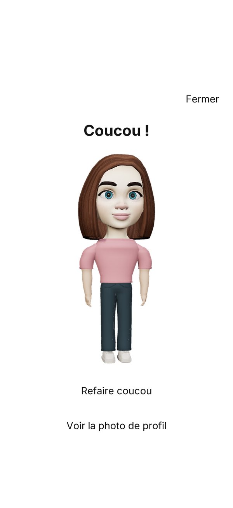
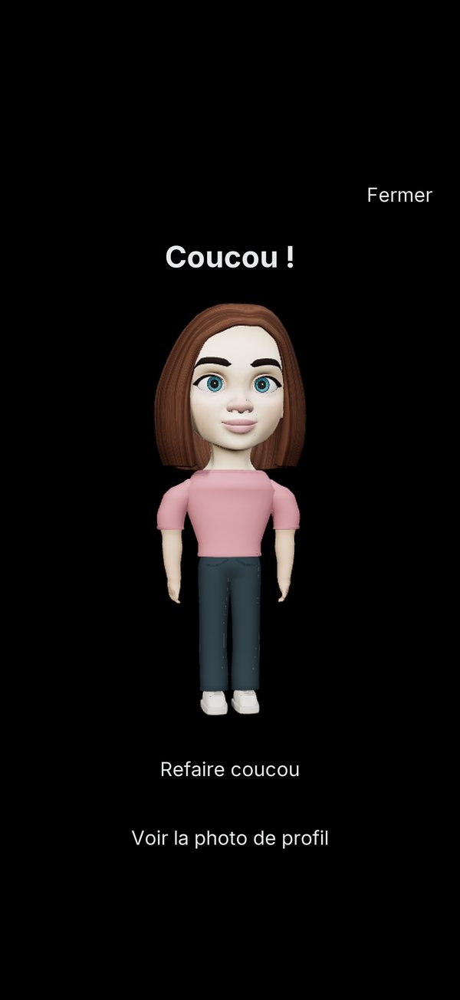
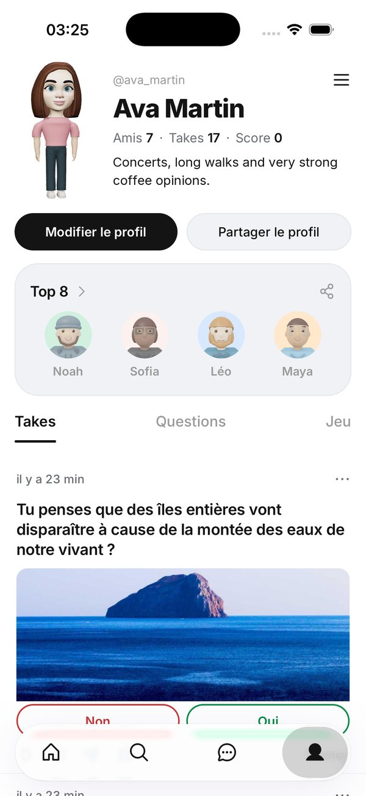
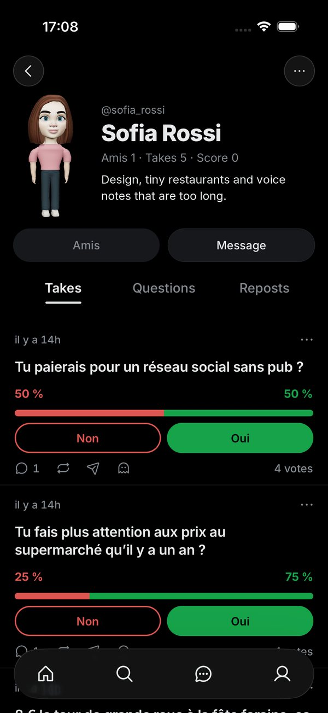
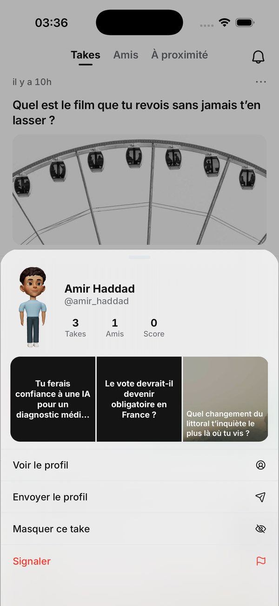
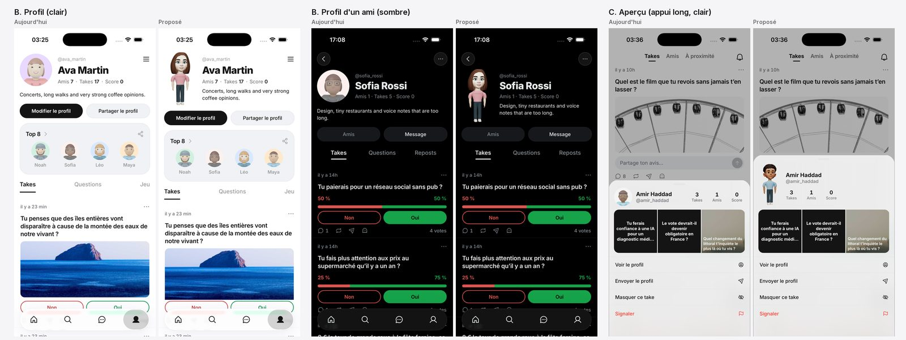

Take · point 82 · page légère
L'avatar en entier : où le montrer
« C'est à nous de l'afficher en complet aussi. » Puis : « on a vrm du taff dessus mais pour l'instant on le met pas en place ».
A, recommandée par a8 : quand on touche la photo de profil, la visionneuse « Coucou ! » montre l'avatar de la tête aux pieds, tenue et chaussures comprises. C'est un composant qui existe déjà, et la mise en page du profil ne bouge pas. B : l'avatar debout à la place de la photo ronde, dans l'en-tête du profil ; tout le monde voit la tenue sans rien toucher. C : l'avatar debout dans l'aperçu ouvert par un appui long. Rien n'est activé : A est codée derrière un drapeau éteint, dans une PR brouillon. L'avatar montré est un exemple, pas celui enregistré sur ces comptes.






À trancher : A, B ou C ?
Maquettes de a8 : vraies captures de l'app et vrais rendus 3D. La page complète